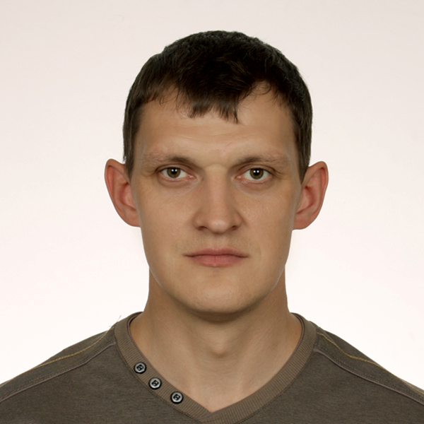

Yauheni Baranski
Located in Minsk, Belarus
- Mob: +375(33)666-56-78
- Email: jaquesloh@gmail.com
- GitHub: https://github.com/jaquesloh
Summary
I’m strongly aiming to start up a new career as a Junior Front-End Developer in It industry this year. My strive is to contribute the best part of my knowledge and skills developed through my past life and work experience to the field which is making great products, giving you constant challenges, but also new knowledge and personal growth in return. I’m a highly motivated, stress-resistant person, willing to get new knowledge and competencies, who understands the importance of teamwork and customer-focused approach.
Skills
Within past 2 weeks I’ve finished:
- HTML Basics
- CSS Basics
- JavaScript Basics
At the moment I’m further developing my skills in HTML, CSS and JavaScript and learning Git and other surrounding Web technologies.
Code Examples
function removeChar(str) {
if (str.length >= 3) {
return str.slice(1, -1);
} else {
return str;
}
};
Experience
-
2003-2005 - Smorgon Secondary School N1, Smorgon, Belarus
a teacher of English and German -
2005-2006 - Specialized Rehabilitation Clinic Herzogenaurach, Herzogenaurach, Germany
a participant of the "Volunteer Social Year In Germany" program -
2006-2007 - Smorgon School For Disabled and Orphans, Smorgon, Belarus
a teacher of English and German -
2007-2018 - Carnival Cruise Lines
Team Headwaiter -
2018-2020 - Youlong Bilingual and Arts Kindergarten, Beijing, China
a teacher of English
Education and Certificates
-
1998-2003 - Yanka Kupala Grodno State University, Grodno, Belarus
Bachelor degree in teaching English and German as a second language -
2005-2006 - Goethe Institut, Erlangen, Germany
Kleines Deutches Sprachdiplom (advanced level)
English level
English proficiency level is C1.
Communication experience:
- Working for 11 years on a cruise ship in the USA
- Teaching English for 2 years in Beijing
- University studies